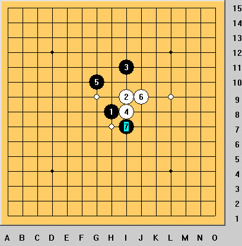

大残刀唯一一个没一打胜的四手
首页
妖刀天下
#1 大残刀唯一一个没一打胜的四手 作者：袜子破个洞 发表时间：2008-11-12 19:27:52
=======上图对应的爱五子棋谱代码如下，以便你拆解：========
h8h9k9i9
======================================================经过长期的研究大残刀这个4手是唯一没有一打必胜的变化了。大家都来发表一下自己的意见。
#2 Re:大残刀唯一一个没一打胜的四手 作者：wrwak 发表时间：2008-11-12 21:43:08
因为这个点很猥琐 黑棋没有什么明显的强的下法各路都差不多
#3 Re:大残刀唯一一个没一打胜的四手 作者：wrwak 发表时间：2008-11-12 21:49:56
54654654654
#4 Re:大残刀唯一一个没一打胜的四手 作者：wrwak 发表时间：2008-11-12 21:51:44
有点像斜月一打
#5 Re:大残刀唯一一个没一打胜的四手 作者：失落刀 发表时间：2008-11-12 22:09:20
很惭愧哦，这个4好像大家都不愿意研究，只有放最后了。
#6 Re:大残刀唯一一个没一打胜的四手 作者：失落刀 发表时间：2008-11-13 0:20:30
袜子朋友，请给出5楼图里面的几个败5的胜6点，好吗？想偷个懒，你给几个6吧。
另外，你QQ前几日问的问题，答案你还需要吗？我今天才开了一会这个QQ，若需要的话，明天我QQ登陆发给你。
#7 Re:大残刀唯一一个没一打胜的四手 作者：袜子破个洞 发表时间：2008-11-13 10:32:46
那个一打我已经全部地毯了。
#8 Re:大残刀唯一一个没一打胜的四手 作者：袜子破个洞 发表时间：2008-11-13 10:35:52
=======上图对应的爱五子棋谱代码如下，以便你拆解：========
h8h9k9i9j8i7i8k8j9h7
======================================================这个变化我觉得到后盘应该白好吧.
#9 Re:大残刀唯一一个没一打胜的四手 作者：wrwak 发表时间：2008-11-13 14:14:47
看看这个5手

#10 Re:大残刀唯一一个没一打胜的四手 作者：侯军学棋 发表时间：2008-11-13 15:42:09